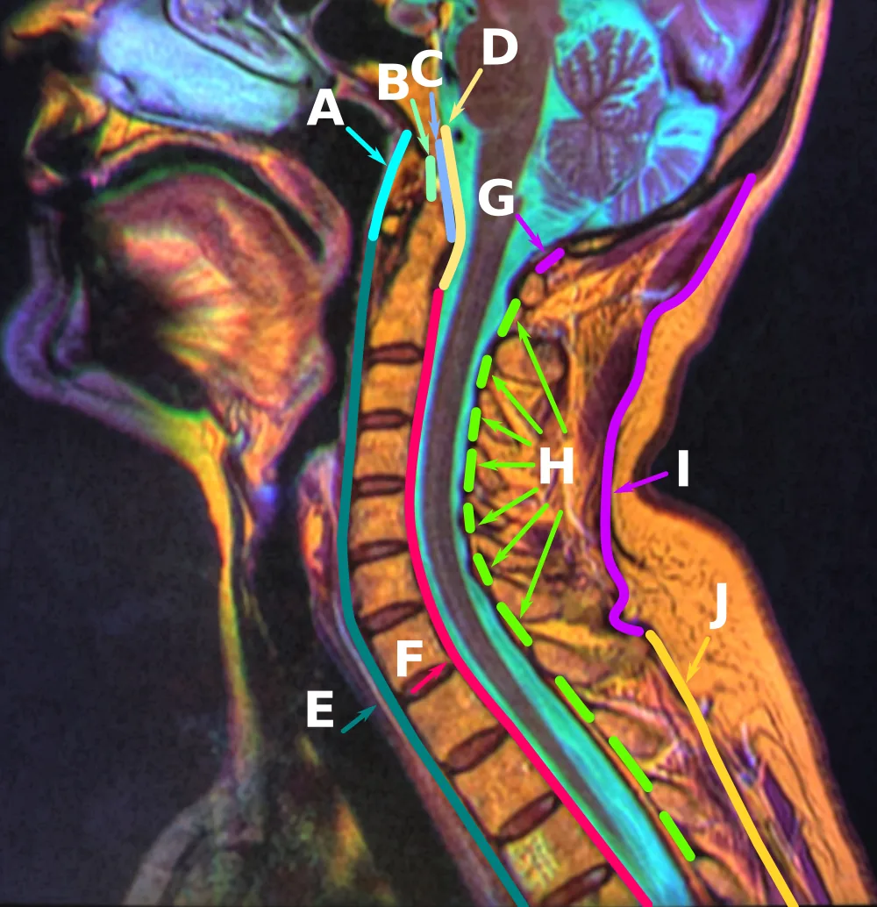
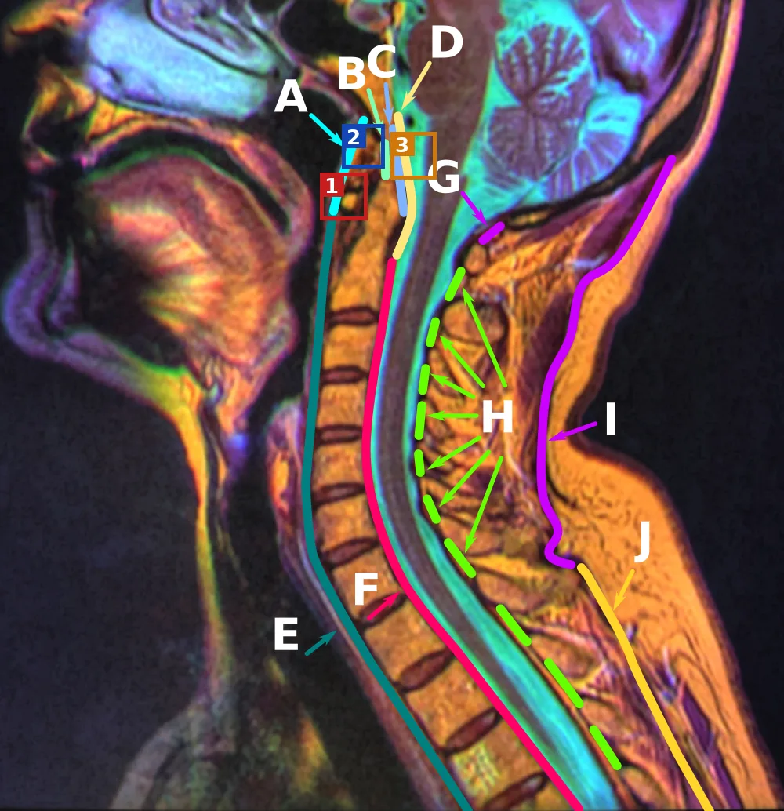

DX.10 — Dissociation occipito-cervicale
1. Définition
AO (Arbeitsgemeinschaft für Osteosynthesefragen) décrit la dissociation occipito-cervicale comme toute lésion qui déplace l’occiput sur le rachis, dans un plan quelconque.ao-uc
Cette translation significative définit le type C de la région qui réunit le condyle occipital et la jonction crânio-cervicale.ao-uc
Cette lésion reste très instable et menace la vie du blessé dès la prise en charge initiale.ao-uc
La définition reste morphologique et précède le pronostic que les séries chiffrent plus loin.ao-uc
Ce type A de la même région est une fracture isolée du condyle, sans lésion ligamentaire significative, et il ne porte pas ce nom.ao-uc
Le type B est une lésion ligamentaire non déplacée, avec ou sans fracture du condyle.ao-uc
Il devient un type C quand un test de stress montre un déplacement que le repos cachait.ao-uc
Cette phrase retenue décrit une translation entre l’occiput et le rachis cervical.ao-uc
Un condyle fracturé mais aligné reste une autre lésion que la dissociation.ao-uc
2. Épidémiologie (Suisse, puis Europe)
AO Spine indique une mortalité de 50 à 60 % pour cette dissociation, le plus souvent après un accident de la route à haute énergie.ao-uc
Les survivants arrivent souvent inconscients, avec un signe d’atteinte cérébrale ou médullaire, ce qui retarde le diagnostic.ao-uc
Ce comité spinal de la WFNS (World Federation of Neurosurgical Societies) retrouve cette lésion dans 10 % des traumatismes cervicaux mortels.wfns-long
Elle dépasse 30 % des décès d’accidents de la route dans la même revue et le dénominateur n’est pas la mortalité de 50 à 60 %.wfns-long
Environ soixante-dix pour cent des cas s’accompagnent d’une lésion cérébrale ou médullaire, ce qui explique les déficits sévères.wfns-long
La jonction C0 (occiput) à C1 (atlas) représente 25 % de la flexion-extension cervicale, selon le même comité.wfns-long
Cette jonction C1 à C2 (axis) assure 50 % de la rotation axiale, et elle ne se confond pas avec la charnière occipitale.wfns-long
Aucune incidence suisse de cette dissociation ne reste lue dans les textes du lot, et aucun taux pour un million n’est posé.ao-uc
Cette fenêtre des pourcentages sépare la mortalité de la part des décès cervicaux.wfns-long
Le traumatisme médullaire suisse, lui, a une incidence de réadaptation de 18,0 pour un million, et il ne mesure pas cette dissociation.swisci-ir
Lire les pourcentages sans les additionner
Cette mortalité de 50 à 60 % décrit le sort de la dissociation elle-même, telle que la page AO Spine la publie.ao-uc
Ce chiffre de 10 % décrit la part des lésions cervicales déjà mortelles qui sont des dissociations, et non la survie.wfns-long
Le seuil de plus de 30 % concerne les décès d’accidents de la route, et il ne s’applique pas à une chute de faible hauteur.wfns-long
La part associée à une lésion du cerveau ou de la moelle explique pourquoi l’examen neurologique est souvent impossible.wfns-long
Les 25 % de flexion-extension et les 50 % de rotation décrivent la mécanique normale, avant la rupture.wfns-long
L’équipe ne construit pas un taux suisse en divisant ces parts et aucune série nationale lue ne donne le dénominateur.ao-uc
Cette cohorte européenne de traumatisés majeurs compte 4489 lésions médullaires, soit 1,8 %, sans isoler la jonction occipitale.tarn-reg
Ce silence épidémiologique reste une limite, et il ne change pas la gravité lue de la lésion.ao-uc
3. Physiopathologie
La jonction tient par les condyles, les membranes et les ligaments et une translation signifie que ces freins ont cédé.ao-uc
Ce type C est instable dans tous les plans, ce qui explique qu’un simple changement de position de la tête modifie le déplacement.wfns-long
La membrane atlanto-occipitale antérieure, le ligament apical et la membrane tectoriale sont les trois freins que l’image couleur permet de situer.image-dilmen
La fenêtre de la chaîne relie la rupture ligamentaire au déficit et à la fixation.ao-uc


Le carré 1 entoure le trait cyan, qui est la membrane atlanto-occipitale antérieure marquée A par l’auteur.image-dilmen
Le carré 2 entoure le trait vert, qui est le ligament apical de la dent marqué B.image-dilmen
Le carré 3 entoure le trait jaune, qui est la membrane tectoriale marquée D.image-dilmen
Nevit Dilmen a publié cette IRM (imagerie par résonance magnétique) entre 2017 et 2018, sous licence Creative Commons Attribution-Share Alike 3.0.image-dilmen
Une rupture de ces freins ouvre le canal à la jonction et la moelle haute et le tronc cérébral sont exposés.ao-uc
Ce comité rappelle que la classification de Traynelis change avec la position de la tête, et qu’elle guide mal le traitement.wfns-long
| Rupture | Ce que l’image montre | Conséquence mécanique |
|---|---|---|
| Membrane antérieure | Trait cyan décroché de l’occiput | Perte du frein antérieur |
| Ligament apical | Trait vert entre la dent et l’occiput | Perte du frein de la pointe |
| Membrane tectoriale | Trait jaune derrière la dent | Perte du frein profond |
| Translation dans un plan | Condyle qui ne repose plus sur C1 | Type C, fixation nécessaire |
De la rupture à la menace vitale
Cette translation sépare l’occiput de C1, et le contenu nerveux n’a plus de gouttière stable.ao-uc
L’artère vertébrale longe les foramens et un déplacement majeur peut l’étirer, sans que cette atteinte devienne un onzième diagnostic.rms2002-av
Le nerf phrénique naît de C3 (troisième racine cervicale) à C5 (cinquième racine cervicale), et une lésion à la jonction peut le couper.rms2014-long
L’hypoxémie et l’hypotension aggravent alors la moelle, comme dans toute lésion haute, mais elles ne définissent pas la dissociation.rms2014-long
Le diagnostic morphologique reste la translation, et le déficit neurologique en est la conséquence, non le nom.ao-uc
Un test de stress qui révèle un déplacement fait passer un type B au type C et l’alignement au repos était trompeur.ao-uc
La lésion est tellement instable que la traction aggrave le déplacement, ce que le comité déconseille.wfns-long
Cette fixation occipito-cervicale reconstruit le frein que les ligaments ne peuvent plus assurer.ao-uc
4. Démarche diagnostique
On traite d’abord la ventilation et le saignement et la plupart des dissociations s’accompagnent d’une lésion cérébrale ou médullaire.wfns-long
Une fréquence respiratoire inférieure à 10 ou supérieure à 30, ou l’absence de pouls radial, reste une menace vitale genevoise.hug-vit
Le comité suspecte la dissociation lorsqu’il existe un traumatisme crânien grave, un déficit des nerfs crâniens bas ou une lésion médullaire, avec un consensus de 100 %.wfns-long
L’équipe ne conclut pas sur une radiographie seule, et sa sensibilité atteint seulement 50,5 % dans la série citée.wfns-long
Une détérioration neurologique après l’admission concernait 18,5 % des patients d’abord évalués par la radiographie.wfns-long
La tomodensitométrie (TDM) a permis le bon diagnostic dans 94,6 % des cas de cette revue, et elle passe avant le cliché simple.wfns-long
Cette fenêtre des voisins écarte le condyle stable, le ligament transverse et l’isthme, qui ne sont pas cette dissociation.ao-uc
Une fracture du condyle sans dissociation se traite de façon conservatrice, et le comité en a un consensus de 100 %.wfns-long
Si la dissociation s’y ajoute, la fixation occipito-cervicale devient nécessaire, quel que soit le type de fracture du condyle.wfns-long
Voisins qui ne sont pas le diagnostic
Ce type A d’AO Spine est une fracture du condyle sans lésion ligamentaire significative, et un collier rigide suffit souvent.ao-uc
Le type B reste aligné au repos, et il ne devient le diagnostic de ce fichier que si le déplacement apparaît.ao-uc
Le ligament transverse se discute lorsque l’écart des masses dépasse 7 mm, et ce seuil appartient à C1, non à l’occiput.ao-uc
Le comité retient aussi un intervalle atlas-dent supérieur à 3 mm, ou un intervalle postérieur inférieur à 13 mm, comme signe possible de ce ligament.wfns-long
Ces deux seuils ont obtenu un consensus de 100 %, et ils ne diagnostiquent pas la translation occipitale.wfns-long
L’isthme de C2 ne s’opère que si les clichés dynamiques montrent une instabilité, et il reste hors des dix diagnostics.rms2005-cx
La lésion ligamentaire pure est une indication chirurgicale absolue de la revue suisse de 2005, sans devenir un diagnostic du lot.rms2005-ind
Cette lésion médullaire traumatique peut coexister, et elle garde son propre nom lorsque le déficit domine le tableau.swisci-def
5. Anamnèse ciblée et drapeaux rouges
On cherche un mécanisme à haute énergie et AO Spine lie cette dissociation aux accidents de la route.ao-uc
L’équipe demande si le blessé a perdu connaissance et les survivants sont souvent inconscients à l’arrivée.ao-uc
On interroge les troubles de déglutition, la voix et la diplopie et les nerfs crâniens bas font partie des signes d’alerte du comité.wfns-long
L’équipe note l’heure, afin de ne pas laisser passer une aggravation pendant que les fonctions vitales sont encore instables.wfns-long
On cherche une douleur cervicale haute chez le patient conscient, sans exiger ce signe lorsque la conscience manque.ao-uc
L’équipe relève un traumatisme crânien et il fait suspecter la dissociation et il contre-indique la morphine.aips-53571
La fenêtre des drapeaux dit l’action que chaque signe impose avant le scanner.hug-vit
| Drapeau | Ce qu’il signifie | Action |
|---|---|---|
| Inconscience après haute énergie | La jonction peut être dissociée et le cerveau blessé | Voies aériennes, puis scanner |
| Déficit des nerfs crâniens bas | Atteinte de la jonction | Ne pas rassurer sur un cliché simple |
| Arrêt respiratoire ou fréquence extrême | Menace vitale | Ventiler avant l’image |
| Aggravation après une traction | La lésion se déplace | Arrêter la traction |
Pourquoi ces questions
Cette question sur le mécanisme évite de chercher cette lésion après une chute de moins d’un mètre, mécanisme qui domine d’autres lésions après 76 ans.swisci-descswisci-ir
La question sur la conscience prépare l’intubation et un score de Glasgow (GCS) de 8 ou moins avec un traumatisme crânien la justifie.rms2014-long
Cette question sur les nerfs crâniens bas vient du consensus, qui atteint 100 % pour suspecter la dissociation dans ce cas.wfns-long
La question sur la traction évite un geste encore décrit dans d’anciennes séries, et que le comité ne recommande plus.wfns-long
Dans une série ancienne, la traction était le premier traitement chez 3 adultes, deux sont morts et le troisième s’est aggravé.wfns-long
On demande les anticoagulants et une chirurgie de fixation se discute dès que l’état général le permet.wses-long
L’équipe ne retarde pas un geste vital pour finir l’interrogatoire et le protocole genevois l’interdit.hug-preh
Un traumatisme pénétrant isolé sans déficit ne s’immobilise pas, règle qui reste vraie à la jonction comme plus bas.hug-preh
6. Examen physique ciblé, région par région
L’examen parcourt l’occiput, la face, le cou, la moelle et la ventilation, et chaque région apporte un signe différent.wfns-long
Le normal est un alignement stable, une voix claire et une ventilation thoracique qui se soulève.ao-uc
Le pathologique est l’inconscience, un déficit des nerfs crâniens bas, une apnée ou une tétraplégie flasque.wfns-long
Cette fenêtre de la face et des nerfs crâniens décrit les signes à chercher.wfns-long
La fenêtre du cou montre comment tenir la tête sans tracter, afin de ne pas aggraver le déplacement.wfns-long
Cette fenêtre de la moelle rappelle le niveau phrénique et le périnée.rms2014-long
La fenêtre des voies aériennes montre pourquoi l’oxygène passe avant la position parfaite du cou.hug-vit
On répète l’examen après chaque mobilisation et la lésion peut se déplacer et le déficit augmenter.wfns-long
Face et nerfs crâniens
L’équipe observe les pupilles et la face et une lésion cérébrale associée est fréquente et change la priorité.wfns-long
On teste la déglutition et la voix si le patient parle et les nerfs crâniens bas alertent sur la jonction.wfns-long
L’équipe ne force pas ces tests chez un patient inconscient, et l’on passe alors à la protection des voies aériennes.hug-vit
Un hématome rétro-pharyngé peut accompagner la lésion, et la revue le cite parmi les signes indirects des clichés.wfns-long
Ce gonflement des parties molles était mentionné chez 30 patients, soit 55,5 %, avec une sensibilité de 69 % pour la dissociation.wfns-long
Ce signe aide à ne pas classer un cliché comme rassurant, mais il ne remplace pas le scanner.wfns-long
On cherche aussi une plaie du cuir chevelu ou une embarrure et le mécanisme est souvent le même.ao-uc
Le comité atteint 100 % de consensus pour suspecter la dissociation devant ces déficits crâniens bas.wfns-long
Cou, sans traction
L’équipe maintient la tête avec les deux mains, dans l’axe, et l’on ne tire pas sur le cou.wfns-long
Ce comité ne recommande pas la traction, avec 92 % de oui et 8 % de non sur cet énoncé.wfns-long
Cette minerve rigide reste la règle chez le patient intubé à Genève, et elle ne remplace pas les mains pendant l’intubation.hug-vit
Le mouvement qui persiste sous une minerve va d’environ 30 à 50 degrés et le collier seul ne stabilise pas une dissociation.rms2021-min
La stabilisation manuelle réduit ce jeu à 10-15 degrés, ce qui justifie les mains jusqu’au halo ou à la fixation.rms2021-min
À Neuchâtel, la minerve rigide a été abandonnée en 2020, et cette divergence suisse ne doit pas conduire à tracter.rms2021-min
On palpe la nuque sans mobiliser, afin de noter une douleur chez le patient conscient.ao-uc
Un log-roll de 20 à 30 degrés suffit pour voir le dos, et le roulis complet reste inutile.hug-log
Moelle et périnée
L’équipe cherche une tétraplégie et la jonction siège au-dessus des renflements qui commandent les quatre membres.ao-uc
On regarde le ventre à l’inspiration et une atteinte de C3 à C5 laisse une respiration paradoxale.rms2014-long
L’équipe teste le tonus anal et l’on cherche un priapisme, signes que la revue suisse relie à une lésion complète.rms2014-long
On ne déclare pas la lésion complète au premier passage et le choc spinal dure en principe moins de 24 heures.rms2014-long
N0 (examen intact) à N4 (lésion complète) servent de modificateur AO, et Nx (non examinable) s’inscrit si la conscience manque.ao-uc
N1 (déficit déjà résolu) suppose une récupération, en général dans les 24 heures, et il ne se cote pas pendant le déficit.ao-uc
N2 (radiculopathie) et N3 (lésion incomplète) décrivent des tableaux partiels, qui ne nient pas la translation osseuse.ao-uc
Ce déficit médullaire coexiste avec la dissociation, et chacun garde son nom dans le lot.swisci-def
Voies aériennes
L’équipe vise une saturation d’au moins 94 % par l’oxygène à haut débit, avant de discuter le collier parfait.rms2014-long
L’oxygénation prime sur la position si les deux s’opposent, selon le protocole genevois.hug-vit
On intube en maintenant la tête, sans traction, lorsque la détresse est sévère ou que le Glasgow atteint 8 ou moins.rms2014-long
La laryngoscopie peut déclencher un réflexe vagal, et l’atropine est alors discutée sans dose écrite et hors AIPS (information professionnelle suisse).rms2014-long
Une fréquence sous 10 ou au-dessus de 30 impose l’assistance, comme pour toute menace vitale du protocole.hug-vit
L’équipe ne retarde pas cette assistance pour obtenir le scanner et l’immobilisation ne doit pas empêcher un geste salvateur.hug-preh
Après l’intubation, la minerve rigide redevient la règle à Genève et le cou doit rester protégé.hug-vit
Le patient est ensuite dirigé vers un centre capable de fixer la jonction, une fois les fonctions vitales tenues.ao-uc
7. Approche syndromique
Trois présentations dominent et le même déplacement peut rendre le patient inconscient, paralysé ou porteur d’un déficit crânien bas.wfns-long
Cette fenêtre du patient inconscient place le cerveau et la jonction dans le même mécanisme.ao-uc
La fenêtre des nerfs crâniens explique pourquoi un trouble de la voix n’est pas un détail.wfns-long
Cette fenêtre de la tétraplégie distingue la conséquence médullaire de la translation osseuse.swisci-def
La classification en déplacement antérieur, longitudinal ou postérieur ne guide pas le geste et la tête change le type.wfns-long
| Présentation | Signe fonctionnel | Signe physique |
|---|---|---|
| Inconscience | Aucun récit du mécanisme | Score de Glasgow bas, voies à protéger |
| Nerfs crâniens bas | Voix, déglutition, vision double | Déficit des dernières paires |
| Tétraplégie | Quatre membres immobiles | Niveau haut, ventilation paradoxale possible |
7.1 Patient inconscient
AO Spine décrit des survivants souvent inconscients, avec un signe cérébral ou médullaire.ao-uc
Ce comité atteint 100 % pour suspecter la dissociation dans le traumatisme crânien grave.wfns-long
On protège les voies aériennes avant de chercher l’alignement et l’hypoxémie aggrave les deux lésions.hug-vit
Le scanner du corps entier, chez le polytraumatisé stabilisé, montre aussi la base du crâne.wses-long
L’équipe ne se fie pas au premier cliché latéral, dont la sensibilité reste de 50,5 %.wfns-long
Une aggravation après ce cliché concernait 18,5 % des patients de la série, ce qui impose le scanner.wfns-long
La morphine est contre-indiquée par le traumatisme crânien, et aucune dose n’est proposée.aips-53571
Le paracétamol reste possible pour une douleur résiduelle, dans les limites de son information professionnelle.aips-58530
7.2 Nerfs crâniens bas
Un trouble de la voix, de la déglutition ou de l’oculomotricité doit faire chercher la jonction, même si le patient parle.wfns-long
Le consensus est de 100 % pour cette suspicion, associée ou non à une lésion médullaire.wfns-long
Ces nerfs croisent la charnière et leur déficit signe la hauteur de la lésion et non une simple entorse basse.wfns-long
On complète par le scanner et le cliché simple manque plus de la moitié des cas dans la série à 50,5 %.wfns-long
L’IRM vient si le doute persiste après le scanner, comme AO Spine le demande.ao-uc
L’équipe ne classe pas ce tableau comme une radiculopathie N2 et les nerfs crâniens ne sont pas des racines spinales.ao-uc
Le modificateur N2 décrit une radiculopathie, et il reste disponible si une racine cervicale est aussi touchée.ao-uc
La conduite reste la fixation lorsque la translation est confirmée, et non un collier prolongé.ao-uc
7.3 Tétraplégie associée
La tétraplégie signifie que la moelle haute est atteinte, et la définition suisse du traumatisme médullaire s’applique en plus.swisci-def
Elle ne remplace pas le diagnostic de dissociation et l’os et le ligament ont leur propre lésion.ao-uc
Environ 3 % seulement des déficits complets récupèrent dans les 24 premières heures, selon la revue de 2005.rms2005-init
Une pression moyenne supérieure à 85 mmHg est visée par la revue suisse du choc neurogénique, sans dose de vasopresseur.rms2014-long
Le consensus européen recommande la même cible pendant l’hémorragie ou la chirurgie urgente, avec un accord de 88,6 %.wses-long
Aucun corticoïde à haute dose n’est donné et la revue de 2014 ne le préconise plus.rms2014
Le schéma historique est aussi refusé par le consensus de 2024, avec un accord de 89,8 %.wses-long
Cette chirurgie de la jonction se discute dès que l’état général est stable, et le comité en a un consensus de 100 %.wfns-long
8. Diagnostic positif et critères
Le diagnostic positif est une translation significative entre l’occiput et le rachis cervical, dans un plan quelconque.ao-uc
Il ne suffit pas d’une fracture du condyle alignée et ce type A reste souvent stable.ao-uc
Il ne suffit pas d’un cliché latéral normal et la sensibilité radiographique citée est de 50,5 %.wfns-long
Ce rapport de Powers devient suspect lorsqu’il dépasse 1, et il reste peu sensible hors du déplacement antérieur.wfns-long
L’intervalle basion-dent de Wholey est cité sous 12 mm dans la liste des méthodes, et il ne suffit pas seul.wfns-long
Seul l’intervalle condyle-C1 selon Pang atteint 100 % de sensibilité et 100 % de spécificité dans la synthèse du comité.wfns-long
L’accord entre lecteurs est absolu pour cet intervalle, alors que les kappa tombent à 0,57, 0,25, 0,25 et 0,20 pour les autres méthodes.wfns-long
La fenêtre des mesures dit laquelle décide et lesquelles ne font que suggérer.wfns-long
Le scanner peut suffire à mesurer l’intervalle condyle-C1, avec 72 % de oui et 28 % de non au comité.wfns-long
L’IRM s’ajoute quand le diagnostic reste douteux et que le déplacement est minime.ao-uc
Mesures, de la suggestion à la décision
Ce rapport de Powers compare deux distances entre la base du crâne et C1, et il dépasse 1 dans la forme antérieure.wfns-long
Il rate davantage les distractions verticales et les déplacements postérieurs et un rapport normal ne rassure pas.wfns-long
L’intervalle basion-dent inférieur à 12 mm est la formulation que le comité attribue à la ligne de Wholey.wfns-long
Ces méthodes dépendent aussi de la stabilité entre C1 et C2, et elles se brouillent si cet étage est luxé.wfns-long
L’intervalle condyle-C1 échappe à cette limite, et le comité le retient comme la méthode la plus constante.wfns-long
Sa sensibilité et sa spécificité de 100 % sont celles de la méthode de Pang, en preuve de classe I dans le texte.wfns-long
Le scanner obtient 94,6 % de diagnostics corrects dans la revue, contre 50,5 % pour la radiographie.wfns-long
On n’additionne pas ces pourcentages et ils décrivent des outils différents sur des séries citées.wfns-long
9. Examens complémentaires
Ce standard pratique est le scanner et il corrige le diagnostic dans 94,6 % des cas revus par le comité.wfns-long
En première intention chez le polytraumatisé stabilisé, le consensus européen recommande le scanner du corps entier avec reconstruction.wses-long
Pour le cou, cette reconstruction va de la base du crâne au moins jusqu’à T1 (première vertèbre thoracique).wses-long
L’IRM reste l’examen du doute quand le scanner n’affirme pas la translation ou que les ligaments doivent être lus.ao-uc
Le comité recommande l’IRM en plus du scanner pour juger les ligaments crânio-cervicaux d’une fracture du condyle, avec un consensus de 100 %.wfns-long
Cette fenêtre du scanner et la fenêtre de l’IRM séparent ce que chaque image décide.wfns-long
Un foramen transverse touché doit faire discuter une angio-IRM, selon la revue suisse de 2002.rms2002-av
Le rachis cervical compte sept corps, et une série qui s’arrête trop haut manque la charnière basse sans innocenter l’occiput.rms2002-av
Aucune autre modalité n’est promue au rang de référence dans les textes lus, et l’on ne l’invente pas.ao-uc
| Résultat | Signification | Conduite |
|---|---|---|
| Translation au scanner | Type C | Halo provisoire puis fixation |
| Condyle fracturé et aligné | Type A possible | Collier, puis contrôle |
| Scanner douteux | Ligaments peut-être rompus | IRM |
| Foramen touché | Artère à vérifier | Angio-IRM |
Scanner
Le scanner montre les condyles, les masses de C1 et la dent sur les reconstructions, et il cherche la translation.wfns-long
Ce comité le place comme étude de première ligne du traumatisme cervical haut, avec 95 % de oui et 5 % de non.wfns-long
Cette phrase concerne le dépistage du rachis cervical suspect, et elle inclut la jonction.wfns-long
Pour la mesure de l’intervalle condyle-C1, l’accord tombe à 72 % de oui et un doute persistant appelle l’IRM.wfns-long
Un gonflement prévertébral sur le cliché simple doit faire traiter le patient comme une dissociation jusqu’au scanner.wfns-long
La sensibilité de ce signe de parties molles est de 69 % dans la série, et elle ne dispense pas de la coupe.wfns-long
L’équipe ne pose pas de traction pour « mieux voir » et le comité la déconseille.wfns-long
L’image décide de la fixation lorsqu’elle montre la translation, dès que l’état général le permet.ao-uc
IRM de doute
AO Spine demande l’IRM s’il existe un doute après le scanner, afin de lire les ligaments encore incertains.ao-uc
Le comité la recommande pour les ligaments crânio-cervicaux lorsqu’une fracture du condyle doit être déclarée stable ou non.wfns-long
Elle montre la capsule, la membrane tectoriale et le gonflement prévertébral lorsque le déplacement osseux est minime.wfns-long
Elle ne remplace pas le contrôle d’une hémorragie et les menaces vitales passent avant.wses-long
Chez une femme enceinte, les textes lus ne fixent ni séquence ni produit et aucune recette n’est ajoutée.wses-long
L’image de Dilmen est une IRM anatomique en couleur, et elle n’est pas le scanner de décision d’un blessé.image-dilmen
Elle sert à reconnaître les trois freins avant de lire une vraie coupe pathologique.image-dilmen
La décision opératoire reste liée à la translation, non à la beauté du cliché anatomique.ao-uc
10. Arbre décisionnel
Une respiration sous 10 ou au-dessus de 30, ou un pouls radial absent, impose de traiter la vie avant la jonction.hug-vit
Si le mécanisme est à haute énergie et que le patient est inconscient, on suspecte la dissociation jusqu’au scanner.wfns-long
Si un déficit des nerfs crâniens bas ou une lésion médullaire existe, la suspicion atteint le consensus de 100 %.wfns-long
Quand le scanner montre une translation, on stabilise par un halo et l’on fixe dès que l’état général le permet.ao-uc
Si le scanner est douteux, on demande l’IRM, et l’on ne tracte pas en attendant.ao-uc
Si le condyle est fracturé mais aligné, sans dissociation, le traitement conservateur a un consensus de 100 %.wfns-long
Si l’écart des masses de C1 dépasse 7 mm, on pense au ligament transverse, qui n’est pas ce diagnostic.ao-uc
Si le foramen transverse est touché, on ajoute l’angio-IRM, sans créer un diagnostic vasculaire dans les dix.rms2002-av
La fenêtre de l’arbre montre ces branches dans l’ordre du comité, de la vie vers la fixation.wfns-long
Une seule lecture
D’abord les voies aériennes et une saturation sous 94 % doit être corrigée avant la mesure des condyles.rms2014-long
Ensuite le maintien manuel, sans traction, pendant que l’on prépare le scanner.wfns-long
Puis le scanner montre la base du crâne jusqu’à T1 au moins, chez le polytraumatisé stabilisé.wses-long
La décision enchaîne un halo et une fixation occipito-cervicale quand la translation est confirmée.ao-uc
Ce comité atteint 100 % pour opérer lorsque l’état général est stable.wfns-long
Aucune branche ne mène à la traction et 92 % du comité la refusent.wfns-long
Aucune branche ne mène à un corticoïde à haute dose et la revue suisse ne le préconise plus.rms2014
La dernière branche est la surveillance neurologique et le déplacement peut encore augmenter.wfns-long
11. Prise en charge selon les recommandations suisses
11.A Le but est la survie, puis une jonction stable et la mortalité lue va de 50 à 60 %.ao-uc
11.A Le but hémodynamique, si la moelle est atteinte, reste une pression moyenne supérieure à 85 mmHg.rms2014-long
11.B Le moyen mécanique est un halo immédiat, puis une fixation occipito-cervicale dès que possible.ao-uc
11.B La traction n’est pas un moyen et le comité ne la recommande pas.wfns-long
Cette fenêtre Urgence, conduite chronologique ordonne les premières minutes, et elle exclut la traction.hug-vit
La fenêtre du paracétamol et la fenêtre de la morphine encadrent la douleur lorsque le crâne est blessé.aips-58530
Cette fenêtre de l’énoxaparine explique pourquoi aucune dose n’est choisie pour cette fixation.aips-49456
11.C On surveille la ventilation, le déficit, la peau sous le halo et les nerfs crâniens, à chaque changement de position.wfns-long
11.D Parmi les survivants opérés, la revue décrit une amélioration d’environ 75 % au dernier contrôle.wfns-long
11.D Un retard de fixation peut augmenter le déficit jusqu’au décès et l’attente n’est justifiée que par une autre menace vitale.wfns-long
Urgence, conduite chronologique
À la première minute, on ouvre les voies et l’on donne l’oxygène si la saturation est sous 94 %.rms2014-long
On tient la tête dans l’axe, et l’on refuse la traction même si le cou paraît long.wfns-long
Si la fréquence respiratoire sort de la bande 10 à 30, on assiste la ventilation.hug-vit
L’équipe cherche un pouls radial et son absence est une menace vitale qui peut être hémorragique.hug-vit
On vise plus de 85 mmHg de pression moyenne si un choc neurogénique accompagne la tétraplégie, sans dose de catécholamine.rms2014-long
L’équipe passe au scanner dès que la vie le permet, de la base du crâne jusqu’à T1 au moins.wses-long
Si la translation est confirmée, on pose un halo en attendant que l’état général autorise la fixation.ao-uc
On n’injecte pas de corticoïde à haute dose, ni dans les huit premières heures ni plus tard.rms2014
Le consensus de 2024 confirme cette abstention, avec un accord de 89,8 %.wses-long
La fixation occipito-cervicale suit, et le comité la recommande à 100 % lorsque le patient est stable.wfns-long
Paracétamol
Le paracétamol Stada, numéro 58530, information mise à jour en juillet 2026, couvre les douleurs post-traumatiques légères à modérées.aips-58530
Chez l’adulte, le plafond quotidien est de 4000 mg, et l’on ne le dépasse pas.aips-58530
Au-delà de 40 kg, chaque prise va de 500 à 1000 mg, jusqu’à 4 g, soit 8 comprimés, en respectant 4 à 8 heures.aips-58530
De 9 à 12 ans, le maximum quotidien est de 2000 mg, et l’usage continu sans médecin s’arrête à 3 jours.aips-58530
De 30 à 40 kg, la prise va de 400 à 600 mg, pour un total de 2 g, soit 4 comprimés.aips-58530
Entre 10 et 50 ml/min de clairance, on espace de 6 heures et l’on ne dépasse pas 3000 mg par jour.aips-58530
Sous 10 ml/min, l’espace devient 8 heures et le total reste à 2000 mg par jour.aips-58530
L’hypersensibilité, l’atteinte hépatique grave et la maladie de Gilbert sont les contre-indications écrites.aips-58530
En grossesse, la dose efficace la plus faible est prise le moins longtemps possible et le risque malformatif à posologie correcte est jugé faible.aips-58530
À l’allaitement, la prudence est de mise, et le texte de cette spécialité cite encore le nom Dafalgan.aips-58530
| Rubrique | Texte lu |
|---|---|
| Grossesse | En cas de nécessité clinique, le paracétamol peut être pris pendant la grossesse à la dose efficace la plus faible, pendant la durée la plus courte possible. |
| Allaitement | La prudence est de mise lors de l’utilisation du Dafalgan pendant l’allaitement. |
Morphine
Cette morphine HCl Bichsel, numéro 53571, mise à jour en février 2024, n’est pas le premier choix lorsque le crâne est blessé.aips-53571
Le traumatisme crânien et l’hypertension intracrânienne sont des contre-indications et cette leçon ne donne aucune dose dans ce cas.aips-53571
Hors cette contre-indication, la douleur aiguë sous-cutanée s’écrit à 10 mg par 70 kg toutes les 4 à 6 heures, entre 5 et 20 mg.aips-53571
Par voie veineuse, la titration est de 2,5 mg toutes les 5 minutes, injectée lentement, jusqu’au contrôle de la douleur.aips-53571
La dépression respiratoire, l’iléus et l’insuffisance hépatique ou rénale sévère restent des contre-indications.aips-53571
Ce texte dit que Morphine HCl Bichsel ne doit pas être administré pendant la grossesse, sauf en cas de nécessité absolue.aips-53571
Il est absolument contre-indiqué d’allaiter sous morphine et la molécule passe dans le lait maternel.aips-53571
Le nouveau-né ventilé reçoit 10 µg par kilogramme et par heure, sans dépasser 15 µg.aips-53571
Le nouveau-né qui respire seul n’en reçoit que sous surveillance intensive, à 5 - 7 µg par kilogramme et par heure, jusqu’à 5 à 6 mois.aips-53571
| Rubrique | Texte lu |
|---|---|
| Grossesse | Morphine HCl Bichsel ne doit pas être administré pendant la grossesse, sauf en cas de nécessité absolue. |
| Allaitement | Il est absolument contre-indiqué d’allaiter. |
Énoxaparine
Clexane, numéro 49456, mis à jour en février 2026, décrit la chirurgie générale et la chirurgie orthopédique, et il ne nomme pas la fixation occipito-cervicale.aips-49456
Cette fixation reste hors AIPS, et aucune dose ne lui est attribuée dans la leçon.aips-49456
Le texte écrit par ailleurs 20 mg, soit 2000 UI, pour un risque chirurgical modéré, environ deux heures avant le geste.aips-49456
Il écrit 40 mg, soit 4000 UI, pour le haut risque et la chirurgie orthopédique, 12 heures avant.aips-49456
La durée moyenne lue est de 7 à 10 jours, et le prolongement orthopédique ajoute 3 semaines à 40 mg.aips-49456
Ces chiffres décrivent les indications écrites, et ils ne deviennent pas la dose de la jonction occipitale.aips-49456
L’hémorragie active, l’accident vasculaire cérébral hémorragique récent et la thrombopénie à l’héparine des 100 derniers jours contre-indiquent le produit.aips-49456
L’énoxaparine ne doit être utilisée pendant la grossesse que si un réel besoin clinique est établi.aips-49456
Chez 8 femmes enceintes porteuses d’une valve, 1 mg par kilogramme deux fois par jour a été suivi de caillots mortels pour la mère et le fœtus.aips-49456
L’allaitement n’est pas recommandé, et le flacon multi ne doit pas être utilisé chez le nouveau-né.aips-49456
Ce consensus européen recommande les compressions pneumatiques dès que possible, avec un accord de 94,3 %, sans choisir une héparine.wses-long
| Rubrique | Texte lu |
|---|---|
| Grossesse | L’énoxaparine ne doit être utilisée pendant la grossesse que si le médecin a établi un réel besoin clinique. L’anesthésie péridurale sous anticoagulant est contre-indiquée. |
| Allaitement | L’allaitement n’est pas recommandé. Clexane multi ne doit pas être utilisé chez le nouveau-né. |
Ce que la fixation change
La fixation postérieure occipito-cervicale est le traitement que le comité retient chez l’adulte, une fois la vie stabilisée.wfns-long
Un halo ou un collier ne servent qu’en attendant cette stabilité générale, ou lorsque la chirurgie est impossible.wfns-long
Environ 75 % des survivants opérés s’améliorent au dernier contrôle dans la synthèse lue, et ce chiffre ne promet pas la marche.wfns-long
Deux des 3 adultes traités d’abord par traction sont morts, et le troisième s’est aggravé, ce qui ferme cette voie.wfns-long
Si une hémorragie impose le bloc, l’hémoglobine sous 7 g/dl déclenche la transfusion selon le consensus européen.wses-long
Les plaquettes se maintiennent au-dessus de 50.000 par millimètre cube pendant l’hémorragie, et plutôt entre 75.000 et 100.000 pour la chirurgie du rachis.wses-long
L’oxygène artériel se tient entre 60 et 100 mmHg, soit 7,9 à 13,3 kPa, et le dioxyde de carbone entre 35 et 40 mmHg.wses-long
12. Prévention
Aucun programme suisse chiffré de prévention des accidents de la route ne reste lu ici, et aucun objectif de campagne n’est posé.ao-uc
Cette prévention secondaire est de ne pas manquer la translation et un cliché à 50,5 % de sensibilité laisse passer la lésion.wfns-long
Elle est aussi de ne pas tracter et ce geste a tué ou aggravé les 3 adultes de la série ancienne.wfns-long
Elle comprend le maintien de la tête et l’oxygène, afin de limiter l’hypoxémie qui aggrave la moelle associée.rms2014-long
La prévention tertiaire est la fixation dès que l’état général le permet, puis la surveillance des nerfs et de la peau.ao-uc
Les compressions pneumatiques démarrent tôt, avec l’accord de 94,3 % du consensus, sans dose d’énoxaparine pour cette opération.wses-long
Le lien avec la mortalité de 50 à 60 % est direct et rater le diagnostic ou tracter augmente le risque déjà lu.ao-uc
13. Points clés
Cette dissociation occipito-cervicale est une translation entre l’occiput et le rachis, instable et menaçante pour la vie.ao-uc
L’équipe la suspecte devant un traumatisme crânien grave, un déficit des nerfs crâniens bas ou une lésion médullaire.wfns-long
Ce scanner décide mieux que le cliché, et l’on ne tracte pas.wfns-long
Le traitement reste un halo provisoire et une fixation occipito-cervicale quand le patient est stable.ao-uc
La morphine est contre-indiquée si le crâne est blessé, et aucun corticoïde à haute dose n’est donné.aips-53571
Cette mortalité lue va de 50 à 60 %, ce qui n’est pas la même chose que 10 % des décès cervicaux.ao-ucwfns-long
Comment lire une mesure sans la transformer en diagnostic
Devant un accident à haute énergie, la dissociation occipito-cervicale reste la translation à confirmer au scanner avant tout geste sur le cou.ao-uc
Pendant la stabilisation initiale, les mains tiennent la tête dans l’axe et la traction reste écartée.wfns-long
Chez le patient inconscient, le comité retient la suspicion de dissociation avec un consensus de 100 %.wfns-long
Après le contrôle des voies aériennes, le scanner de la base du crâne jusqu’à T1 (première vertèbre thoracique) montre les condyles.wses-long
Parmi les méthodes anciennes, le rapport de Powers devient suspect seulement lorsqu’il dépasse 1.wfns-long
Sans déplacement antérieur, ce rapport rate la distraction verticale et le déplacement postérieur.wfns-long
Hors de l’intervalle condyle-C1, les autres mesures perdent en accord entre lecteurs.wfns-long
Deux lecteurs s’accordent de façon absolue sur l’intervalle condyle-C1, là où les kappa descendent à 0,57.wfns-long
Trois autres kappa, 0,25, 0,25 et 0,20, décrivent l’intervalle basion-axe, les lignes X et le rapport de Powers.wfns-long
Quatre méthodes historiques restent citées, et seule la méthode de Pang atteint 100 % de sensibilité et 100 % de spécificité.wfns-long
Chaque cliché simple qui paraît normal doit être relu, et sa sensibilité dans la série citée atteint 50,5 %.wfns-long
Certains patients s’aggravent après ce cliché, et la part citée de cette aggravation atteint 18,5 %.wfns-long
Plusieurs signes de parties molles accompagnent la lésion, avec 30 patients et une sensibilité de 69 %.wfns-long
Aucune radiographie normale n’élimine la translation quand le mécanisme et les nerfs crâniens bas sont réunis.wfns-long
Toute série qui s’arrête au-dessus de T1 peut manquer une lésion basse sans innocenter l’occiput.wses-long
Leur scanner corrige le diagnostic dans 94,6 % des cas revus, ce qui dépasse largement le cliché.wfns-long
Son gonflement prévertébral, noté dans 55,5 % des clichés de la série, maintient la suspicion jusqu’à la coupe.wfns-long
Cette coupe axiale et ses reconstructions montrent si le condyle repose encore sur C1 (atlas).wfns-long
Ce condyle fracturé et aligné reste souvent un type A, et le collier rigide suffit alors.ao-uc
Une translation, même dans un seul plan, fait de la lésion un type C qui exige une fixation.ao-uc
L’image anatomique de Dilmen montre les trois freins, membrane antérieure, ligament apical et membrane tectoriale.image-dilmen
L’équipe ne s’en sert pas comme d’un scanner de blessé, et elle s’en sert pour nommer les traits avant la coupe pathologique.image-dilmen
Le maintien manuel réduit le jeu du cou à 10-15 degrés, ordre de grandeur lu chez le volontaire et le cadavre.rms2021-min
À Genève, la minerve rigide reste la règle après l’intubation, sans autoriser une traction.hug-vit
Au scanner douteux, l’IRM (imagerie par résonance magnétique) vient lire la capsule et la membrane tectoriale.ao-uc
Sur le cliché de face bouche ouverte, un écart des masses au-delà de 7 mm oriente vers le ligament transverse.ao-uc
Dans la série du comité, cet écart ne reste pas le critère de la dissociation occipitale.ao-uc
Entre C1 et la dent, un intervalle supérieur à 3 mm ou un intervalle postérieur inférieur à 13 mm fait discuter le ligament transverse.wfns-long
Sous ces seuils, le ligament transverse peut rester intact, et la translation occipitale se juge ailleurs.wfns-long
Avec un foramen transverse touché, l’angio-IRM se discute selon la revue suisse de 2002.rms2002-av
Malgré un os intact, une hernie peut comprimer la moelle, comme le cas où le scanner était normal.rms2014-long
Grâce au halo, la tête reste stable en attendant que l’état général autorise la fixation.ao-uc
Afin de ne pas aggraver le déficit, la traction cervicale reste écartée du parcours.wfns-long
Quand l’état général est stable, la fixation occipito-cervicale obtient un consensus de 100 %.wfns-long
Si la chirurgie est impossible, le halo ou le collier ne servent que de mesure d’attente.wfns-long
Lorsque deux des 3 adultes tractés sont morts et que le troisième s’est aggravé, cette voie se ferme.wfns-long
Tandis que la radiographie sensibilise à 50,5 %, le scanner atteint 94,6 % de diagnostics corrects.wfns-long
Alors que le comité accepte le scanner pour l’intervalle condyle-C1 à 72 %, 28 % des votants gardent un doute.wfns-long
Cependant le dépistage cervical général obtient 95 % de oui et 5 % de non pour le scanner de première ligne.wfns-long
Toutefois ces deux votes ne portent pas sur la même question, et l’on ne les additionne pas.wfns-long
Néanmoins un gonflement des parties molles sur le cliché impose de poursuivre jusqu’au scanner.wfns-long
En revanche, une fracture isolée du condyle sans dissociation suit un traitement conservateur, consensus de 100 %.wfns-long
Par ailleurs, la dissociation ajoutée à cette fracture impose la fixation, quel que soit le type du condyle.wfns-long
En outre, l’IRM des ligaments crânio-cervicaux obtient aussi un consensus de 100 % pour juger la stabilité du condyle.wfns-long
Dès lors, le chirurgien attend la stabilité vitale et non un alignement parfait sur un cliché simple.wfns-long
Ensuite la fixation postérieure reconstruit le frein que les membranes ne tiennent plus.ao-uc
Enfin les survivants opérés s’améliorent dans environ 75 % des cas au dernier contrôle lu.wfns-long
D’abord la ventilation : une fréquence sous 10 ou au-dessus de 30 reste une menace vitale.hug-vit
Ainsi une saturation sous 94 % se corrige par l’oxygène à haut débit avant la mesure des condyles.rms2014-long
Or le pouls radial absent peut signer une hémorragie, et la jonction n’explique pas seule ce signe.hug-vit
C’est pourquoi l’immobilisation d’un traumatisme fermé ne retarde pas le geste qui sauve la vie.hug-preh
De ce fait, un traumatisme pénétrant isolé sans déficit ne reçoit pas d’immobilisation systématique.hug-preh
En effet le protocole genevois sépare le mécanisme fermé du mécanisme pénétrant.hug-preh
Par conséquent le log-roll utile reste limité à 20 à 30 degrés, et le roulis complet reste inutile.hug-log
Autrement dit, la planche ne sert qu’un temps court et le matelas coquille assure le transport.hug-log
C’est-à-dire que les transferts se font avec une civière à aube, sans torsion de la jonction.hug-log
L’intérêt de répéter l’examen neurologique après chaque mobilisation du blessé encore instable reste entier.wfns-long
Grâce à cette répétition, une aggravation du déficit se voit avant que la fixation soit retardée sans raison.wfns-long
À cause d’une lésion médullaire associée, la pression moyenne se vise au-dessus de 85 mmHg sans dose de vasopresseur.rms2014-long
En raison de l’accord de 88,6 %, le consensus européen reprend cette cible pendant l’hémorragie ou la chirurgie urgente.wses-long
Une baisse brève ne reste tolérée que le temps de contrôler un saignement difficile.wses-long
Pour que la moelle ne subisse pas une deuxième insulte, l’hypoxémie se corrige en même temps que l’hypotension.rms2014-long
De sorte que le délai opératoire de 24 heures du consensus reste fermé tant que les menaces vitales durent.wses-2024
Tandis que des travaux expérimentaux cités par la revue suisse parlent de 12 heures, l’heure idéale reste débattue.rms2014-long
Cependant aucun corticoïde à haute dose n’entre dans ce délai, ni dans les premières heures ni plus tard.rms2014
Le consensus de 2024 confirme l’abstention, et l’accord sur cet énoncé atteint 89,8 %.wses-long
Une hémoglobine inférieure à 7 g/dl pendant l’hémorragie déclenche la transfusion dans ce même consensus.wses-long
Les plaquettes restent au-dessus de 50.000 par millimètre cube dans l’hémorragie menaçante.wses-long
Pour la chirurgie du rachis, la zone souhaitée va de 75.000 à 100.000 par millimètre cube.wses-long
L’oxygène artériel se tient entre 60 et 100 mmHg, soit 7,9 à 13,3 kPa, pendant ces gestes.wses-long
Le dioxyde de carbone se tient entre 35 et 40 mmHg, soit 4,7 à 5,3 kPa.wses-long
Le temps de coagulation se maintient sous 1,5 fois le témoin pendant l’hémorragie ou la chirurgie.wses-long
L’énoxaparine de la fixation occipito-cervicale reste hors AIPS (information professionnelle suisse), sans dose attribuée.aips-49456
La morphine reste contre-indiquée quand un traumatisme crânien accompagne l’inconscience du blessé.aips-53571
Le paracétamol, numéro 58530, reste utilisable pour une douleur légère, sous le plafond de 4000 mg chez l’adulte.aips-58530
L’isthme de C2 (deuxième vertèbre cervicale) ne devient pas ce diagnostic, et il ne s’opère que si les clichés dynamiques sont instables.rms2005-cx
La lésion ligamentaire pure reste une indication absolue de la revue de 2005, hors des dix places du lot.rms2005-ind
Environ 3 % des lésions médullaires complètes récupèrent dans les 24 premières heures, ce qui ne décrit pas la jonction.rms2005-init
L’incidence suisse de 18,0 pour un million mesure le traumatisme médullaire admis en réadaptation, non cette dissociation.swisci-ir
La cohorte européenne compte 4489 lésions médullaires, soit 1,8 % des traumatisés majeurs, sans isoler l’occiput.tarn-reg
La mortalité de 50 à 60 % publiée par AO Spine ne se confond pas avec les 10 % des décès cervicaux.ao-ucwfns-long
Plus de 30 % des décès d’accidents de la route dans la revue du comité relèvent de cette lésion, autre dénominateur encore.wfns-long
La jonction occiput-atlas représente 25 % de la flexion-extension, et l’atlas-axis représente 50 % de la rotation.wfns-long
Ces parts décrivent le mouvement normal, et elles ne donnent pas la fréquence de la rupture.wfns-long
Le fichier de Dilmen date de 2017 à 2018 et reste sous licence Creative Commons Attribution-Share Alike 3.0.image-dilmen
Les carrés 1, 2 et 3 y marquent la membrane antérieure, le ligament apical et la membrane tectoriale.image-dilmen
14. Pièges et questions fréquentes à l’examen fédéral suisse
Les questions suivantes visent les confusions de seuil, de traction et de dénominateur, avec la source déjà utilisée.wfns-long
| Question | Réponse | Raison |
|---|---|---|
| Une mortalité de 10 % est-elle celle de la dissociation? | Non. 10 % est la part des lésions cervicales mortelles, et 50 à 60 % est la mortalité de la lésion. | Les dénominateurs diffèrent entre le comité et AO Spine. |
| Le rapport de Powers sous 1 élimine-t-il la dissociation? | Non. Il rate les formes verticales et postérieures. | Le comité retient l’intervalle condyle-C1, à 100 % dans la synthèse. |
| Faut-il tracter pour réduire? | Non. Le comité ne le recommande pas, à 92 %. | Trois adultes tractés, deux décès et une aggravation. |
| Un condyle fracturé aligné est-il une dissociation? | Non. C’est souvent un type A, traité par collier. | La dissociation exige une translation. |
| L’écart de 7 mm diagnostique-t-il cette lésion? | Non. Il concerne le ligament transverse de C1, hors des dix. | AO Spine le lie à la règle de Spence. |
| La morphine est-elle licite si le patient est inconscient après un choc crânien? | Non. Le traumatisme crânien contre-indique la morphine. | Aucune dose n’est écrite pour ce cas. |
| Le cours suffit-il, lu seul, à sécuriser le patient et à prendre presque tous les points? | Non. | La dose d’énoxaparine de la fixation n’est pas écrite, les vasopresseurs n’ont pas de dose, et l’isthme, le ligament transverse et la lésion ligamentaire pure restent hors des dix. |
La réponse finale reste non et la fixation occipito-cervicale n’a pas de dose d’énoxaparine dans l’information professionnelle.aips-49456
Elle reste non pour les vasopresseurs, que la revue suisse nomme sans milligramme et hors information professionnelle pour la dose.rms2014-long
Elle reste non enfin et l’isthme instable de C2, le ligament transverse et la lésion ligamentaire pure existent à côté des dix noms.rms2005-ind
Sources
- [aips-49456] Clexane, information professionnelle, mise à jour Février 2026, numéro 49456 — https://files.refdata.ch/simis-public-prod/MedicinalDocuments/3b42abe606a74cccbcbd45f823b104f3-fr.html (consulté le 15 novembre 2026).
- [aips-53571] Morphine HCl Bichsel, information professionnelle, mise à jour Février 2024, numéro 53571 — https://files.refdata.ch/simis-public-prod/MedicinalDocuments/406bcf9ec9244bac9eb81a3eb70a0ced-fr.html (consulté le 15 novembre 2026).
- [aips-58530] Paracétamol Stada, information professionnelle, mise à jour Juillet 2026, numéro 58530 — https://files.refdata.ch/simis-public-prod/MedicinalDocuments/6a8ba1f855314947892cc9aa73bc49ce-fr.html (consulté le 15 novembre 2026).
- [ao-uc] AO Spine, classification du rachis cervical supérieur, Surgery Reference, Oner, Lehman, Riew, Schnake et Vialle, fondation AO à Davos — https://surgeryreference.aofoundation.org/spine/trauma/occipitocervical/further-reading/ao-spine-upper-cervical-injuries-classification-system (consulté le 15 novembre 2026).
- [hug-log] Même protocole, log-roll et matelas coquille — même URL (consulté le 15 novembre 2026).
- [hug-preh] Hôpitaux universitaires de Genève, immobilisation du rachis, mise à jour du 4 janvier 2023 — https://www.hug.ch/sites/interhug/files/structures/medecine_de_premier_recours/191220_rug_trauma_cervical.pdf (consulté le 15 novembre 2026).
- [hug-vit] Même protocole, menaces vitales et minerve du patient intubé — même URL (consulté le 15 novembre 2026).
- [image-dilmen] Dilmen N, Anatomy of the Neck Sagittal Color MRI, licence Creative Commons Attribution-Share Alike 3.0, Wikimedia Commons — https://commons.wikimedia.org/wiki/File:Anatomy_of_the_Neck_Sagittal_Color_MRI.png (consulté le 15 novembre 2026).
- [rms2002-av] Poletti PA et al., Revue médicale suisse, 15 juillet 2002, angio-IRM du foramen — https://www.revmed.ch/revue-medicale-suisse/2002/revue-medicale-suisse-2399/imagerie-des-traumatismes-de-la-colonne-cervicale (consulté le 15 novembre 2026).
- [rms2005-cx] Même article, rachis cervical inférieur et isthme de C2 — même URL (consulté le 15 novembre 2026).
- [rms2005-ind] Même article, indications absolues dont la lésion ligamentaire pure — même URL (consulté le 15 novembre 2026).
- [rms2005-init] Schizas C, Revue médicale suisse, 21 décembre 2005, pronostic des lésions complètes — https://www.revmed.ch/revue-medicale-suisse/2005/revue-medicale-suisse-46/lesions-traumatiques-rachidiennes-et-indications-au-traitement-chirurgical (consulté le 15 novembre 2026).
- [rms2014] Même revue, nerf phrénique et abandon des corticoïdes à haute dose — même URL (consulté le 15 novembre 2026).
- [rms2014-long] Meister R et al., Choc neurogénique, Revue médicale suisse, 13 août 2014 — https://www.revmed.ch/revue-medicale-suisse/2014/revue-medicale-suisse-438/choc-neurogenique (consulté le 15 novembre 2026).
- [rms2021-min] Même article, mouvement résiduel et abandon neuchâtelois de la minerve — même URL (consulté le 15 novembre 2026).
- [swisci-def] Chamberlain JD et al., définition du traumatisme médullaire, Injury Epidemiology, publié le 2 novembre 2015 — https://link.springer.com/article/10.1186/s40621-015-0061-4 (consulté le 15 novembre 2026).
- [swisci-desc] Même article, niveau, gravité et chutes — https://link.springer.com/article/10.1186/s40621-015-0061-4 (consulté le 15 novembre 2026).
- [swisci-ir] Même article, incidences suisses 2005-2012 — https://link.springer.com/article/10.1186/s40621-015-0061-4 (consulté le 15 novembre 2026).
- [tarn-reg] Hasler RM et al., cohorte européenne TARN (Trauma Audit and Research Network), 1988-2009 — https://pmc.ncbi.nlm.nih.gov/articles/PMC3229733/ (consulté le 15 novembre 2026).
- [wfns-long] Alves OL et al., Upper Cervical Spine Trauma, recommandations du comité spinal de la WFNS (World Federation of Neurosurgical Societies), Neurospine, 31 décembre 2020 — https://pmc.ncbi.nlm.nih.gov/articles/PMC7788417/ (consulté le 15 novembre 2026).
- [wses-2024] Même consensus, décompression possible dans les 24 heures et refus du schéma NASCIS (National Acute Spinal Cord Injury Study) — même URL (consulté le 15 novembre 2026).
- [wses-long] Picetti E et al., consensus WSES (World Society of Emergency Surgery) et EANS (European Association of Neurosurgical Societies), World Journal of Emergency Surgery, 18 janvier 2024 — https://pmc.ncbi.nlm.nih.gov/articles/PMC10795357/ (consulté le 15 novembre 2026).
Le contenu reprend les sources citées, et il reste une aide à l’étude plutôt qu’une prescription.
Il n’a pas été validé cliniquement par un médecin, donc la conduite réelle suit le senior et l’information professionnelle.